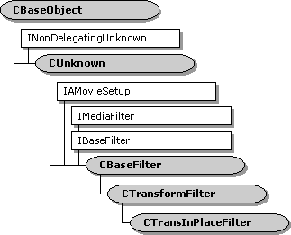

description: 'The CTransInPlaceFilter class is designed for in-place transform filters, which are filters that modify the input data rather than copying the data across buffers.To use this class, derive a new class from CTransInPlaceFilter and implement the following methods:' ms.assetid: 3d6d5436-f280-4e36-96e4-40161e8115c2 title: CTransInPlaceFilter class (Transip.h) ms.topic: reference ms.date: 4/26/2023 topic_type:
[The feature associated with this page, DirectShow, is a legacy feature. It has been superseded by MediaPlayer, IMFMediaEngine, and Audio/Video Capture in Media Foundation. Those features have been optimized for Windows 10 and Windows 11. Microsoft strongly recommends that new code use MediaPlayer, IMFMediaEngine and Audio/Video Capture in Media Foundation instead of DirectShow, when possible. Microsoft suggests that existing code that uses the legacy APIs be rewritten to use the new APIs if possible.]

The CTransInPlaceFilter class is designed for in-place transform filters, which are filters that modify the input data rather than copying the data across buffers.To use this class, derive a new class from CTransInPlaceFilter and implement the following methods:
This class uses the CTransInPlaceInputPin class for its input pin, and the CTransInPlaceOutputPin class for its output pin. Typically, you do not need to override these pin classes. The filter creates both pins in the CTransInPlaceFilter::GetPin method. If you do override the pin classes, you must override GetPin to create your custom pins.
This class is designed so the input type always matches the output type. Whenever possible, the filter uses a single allocator for both pin connections.
If the output pin is already connected, the input pin offers the downstream filter's preferred types. (In fact it simply returns the downstream filter's enumerator object.) Otherwise, it has no preferred types. The output pin has the same behavior, but in reverse: If the input pin is already connected, the output pin offers the upstream filter's preferred types. Otherwise, it has no preferred types
When one pin connects, the filter generally reconnects the other pin, to make sure that both pins use the same media type and the same allocator. (The mechanism for reconnecting pins is described in Reconnecting Pins.) Two scenarios are possible: Either the input pin connects first, or the output pin connects first.
Suppose the input pin connects first. The following steps occur:
Later, when the output pin connects:
Now consider the opposite scenario, where the output pin is the first pin to connect.
Then, when the input pin connects:
This sequence of events changes slightly if any of the allocators involved are read-only, because the downstream allocator must be writable. In that case, the filter might use two separate allocators.
For more information about using this class, see Writing Transform Filters.
| Protected Member Variables | Description |
|---|---|
| m_bModifiesData | Indicates whether the filter modifies the sample data. |
| Protected Methods | Description |
| Copy | Copies a media sample. |
| InputPin | Retrieves a pointer to the filter's input pin. |
| OutputPin | Retrieves a pointer to the filter's output pin. |
| TypesMatch | Determines whether the input media type matches the output media type. |
| UsingDifferentAllocators | Determines whether the input and output pins are using different allocators. |
| Public Methods | Description |
| CTransInPlaceFilter | Constructor method. |
| GetPin | Retrieves a pin. |
| GetMediaType | Retrieves a preferred media type for the output pin. |
| DecideBufferSize | Sets the output pin's buffer requirements. |
| CheckTransform | Checks whether an input media type is compatible with an output media type. |
| CompleteConnect | Completes a pin connection. |
| Receive | Receives a media sample, processes it, and delivers it to the downstream filter. |
| Pure Virtual Methods | Description |
| Transform | Transforms a sample in place. |
| Requirement | Value |
|---|---|
| Header | Transip.h (include Streams.h) |
| Library | Strmbase.lib (retail builds); Strmbasd.lib (debug builds) |